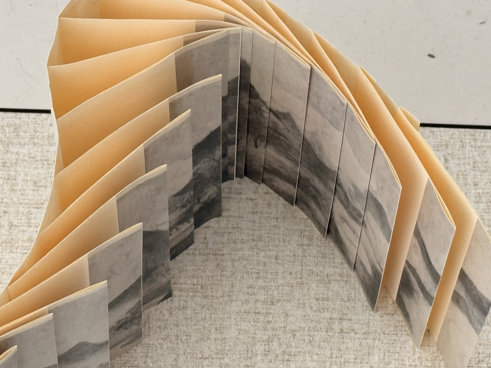

CURRENT PRACTICE / 01
THREE STATES
OF ORDER
Beijing Orders
One material prototype · Two speculative visual studies · Interactive binding study

Project
Introduction
Three States of Order: Beijing Orders began with the bodily experience of moving through Beijing’s architectural and historical spaces. Rather than describing the city’s appearance, it asks: how might bodily encounters with historical order be translated into a material and temporal structure of reading?
These spatial relations are translated into a temporal structure of reading through dragon-scale binding. One hand-made material pilot—C / Opened—establishes the physical system. A / Placed and B / Remained extend that system as speculative digital visualisations of two further states of order.
01
ENCOUNTERING ORDER
Field observation and sketchbook studies across the Forbidden City, Beijing’s central axis, the Summer Palace and Yuanmingyuan focused on how order is encountered through the body: repeated gates, prescribed routes, symmetrical structures, material surfaces, distance, stopping and moments of partial visibility.
The research moved away from recording particular sites and towards isolating the relations that organise perception: axis, procession, hierarchy, repetition, density, interval and trace.
02
THREE STATES
The project distinguishes three ways in which historical order can exist: as an arrangement that positions the body, as a residue that persists after function has receded, and as something that becomes perceptible only through movement and attention.
A / PLACED
Order is established.
Axis, procession, architecture, ritual and prescribed position.
- Visual source
- Wanshou Shengdian Tu, c. 1717
- Operation
- Extracting routes, queues, gates, density and alignment.
B / REMAINED
Order persists as trace.
Stone, surface, sediment, rupture, erosion and material residue.
- Visual source
- Mountain-and-stone imagery associated with Rivers and Mountains Stretching for Thousands of Miles
- Operation
- Extracting pores, cracks, shadows and layered stone surfaces.
C / OPENED
Order becomes perceptible.
Mist, mountain, interval, absence and gradual appearance.
- Visual source
- Mi Youren, Wondrous Views of Xiao and Xiang, 1135
- Operation
- Using gaps, overlap and pale tonal shifts to stage gradual revelation.
03
STRUCTURAL TRANSLATION
Dragon-scale binding is used as an operative structure rather than a decorative sign of tradition. Each leaf occupies a defined position, overlaps another and can only be read through a sequence of lifting, revealing and returning.
The textile mount, continuous base and overlapping leaves form one object. It unfolds for reading and rolls back together; it is not a separate book placed on a scroll.
The work does not reconstruct a historical specimen. It uses the binding’s overlapping and sequential logic as a contemporary method for testing how spatial order can become bodily, temporal and only partially visible.
04
MAKING THE MATERIAL PILOT
The structure was discovered through printing, cutting, folding and repeated assembly. Screen-based continuity changed when it met paper: edges, friction, bending, shadow and slight misalignment became active parts of the work rather than imperfections to remove.
05
THE SERIES
CONCEPTUAL ORDER / PRODUCTION PATH
The series is read conceptually as Placed → Remained → Opened. Its production developed in the opposite direction: the hand-made Opened prototype provided the material and structural basis from which Placed and Remained were visualised digitally.
A / DIGITAL STUDY
PLACED
Order as positioning, alignment and ritual sequence.
Procession, architecture and axial organisation are arranged across the overlapping leaves as a world in which every element appears to occupy a prescribed position.

B / DIGITAL STUDY
REMAINED
Order as residue, sediment and material persistence.
Dense stone surfaces, rupture and the irregular pale gap treat history as something that remains materially present after its organising function has receded.

C / PHYSICAL PROTOTYPE
OPENED
Order as interval, unfolding and perceptual revelation.
Mist, distance and absence become gradually perceptible between pale overlapping leaves. This is the completed hand-made material pilot for the series.

INTERACTIVE BINDING STUDY · COVER → A / FRONT ↔ B / REVERSE00 / 17
DRAG LEFT → RIGHT · FIXED EDGE / FREE EDGE · ← → ONE LEAF AT A TIME
06
MATERIAL READING
The prototype is not completed by being seen as a fixed image. Its structure asks for touch, lifting, hesitation and return. Fibres, folds, page edges and small variations in alignment make reading dependent on the duration and pressure of the hand.
Making also complicated the project’s initial idea of order. Small deviations introduced by the hand did not weaken the structure; they made order perceptible as something negotiated between a system, its materials and the body reading it.


07
NEXT INQUIRY
The material pilot has established a viable structure and a method for translating spatial relations into sequential reading. The next stage is reader observation. A small handling study will examine how participants open, pause, reverse and re-roll the object, and whether the intended states of positioning, residue and gradual appearance remain perceptible without prior explanation.